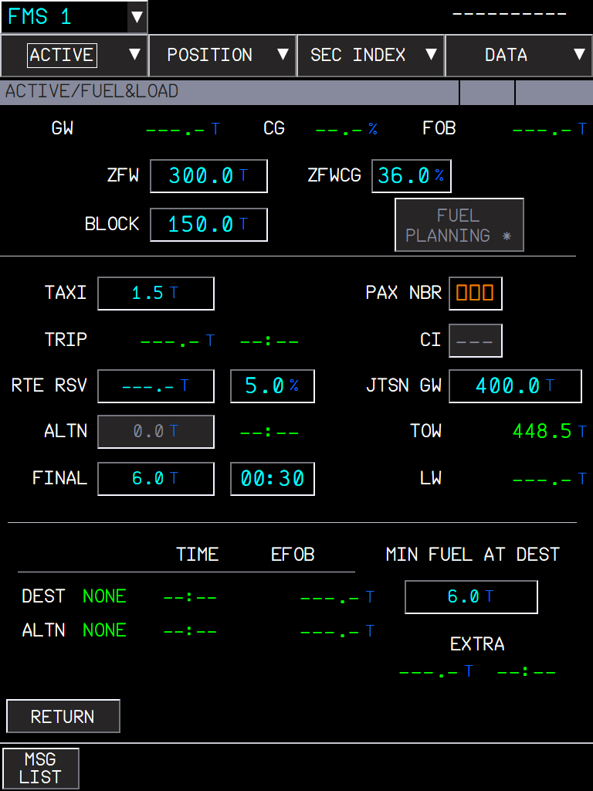
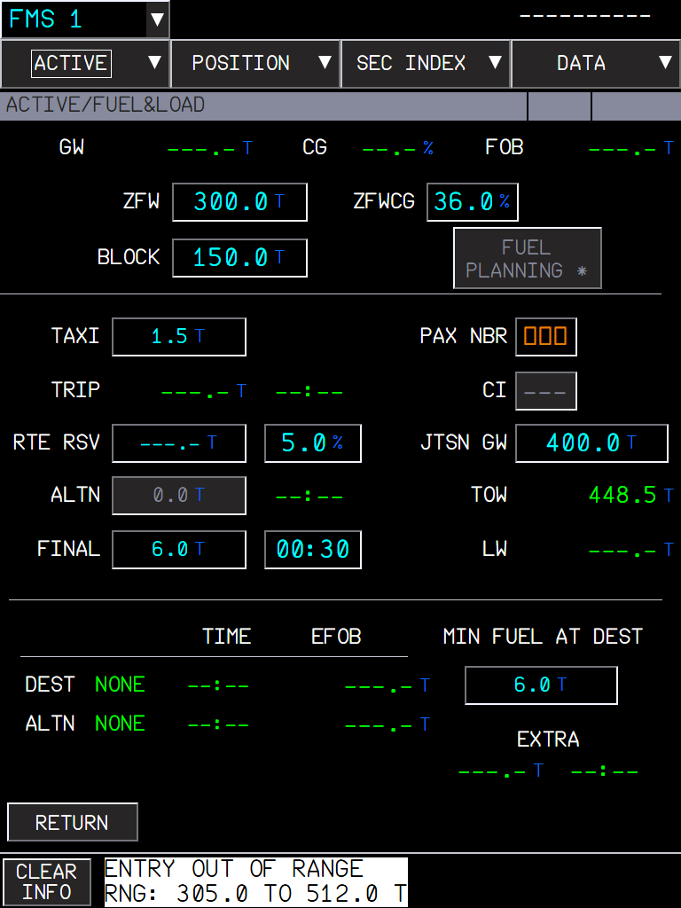
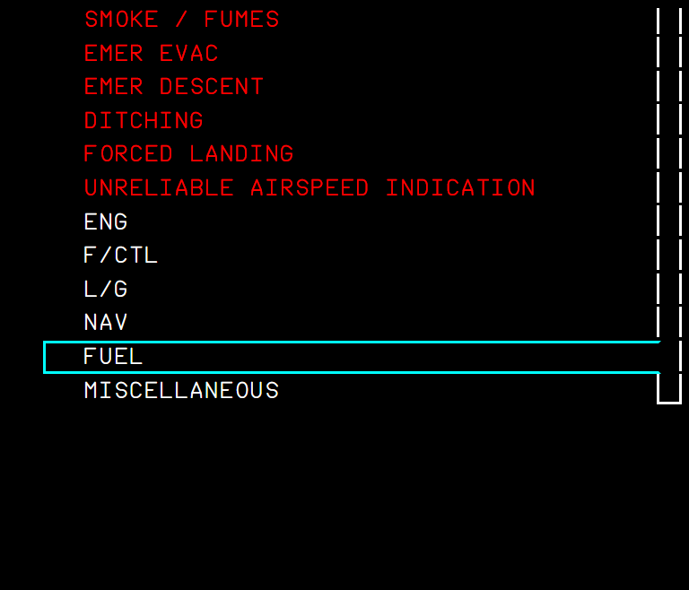
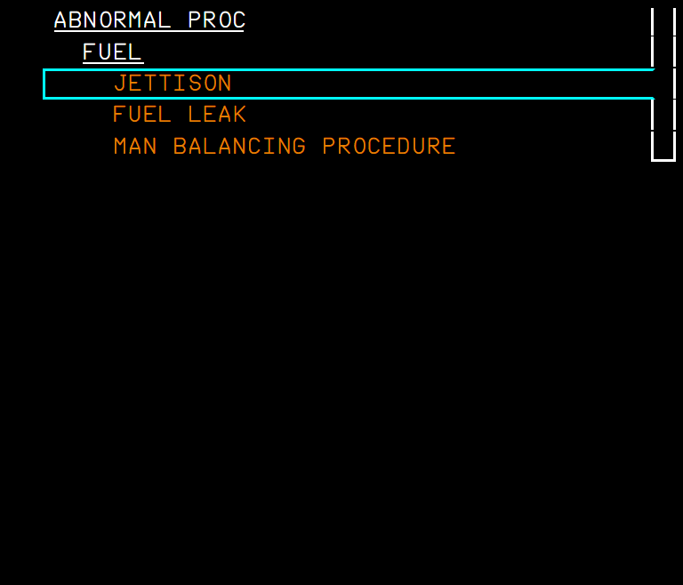
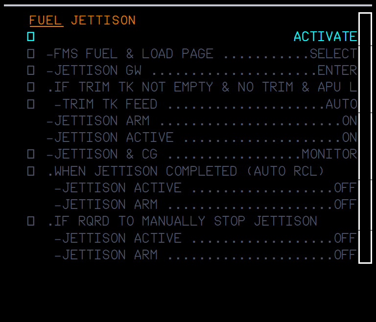
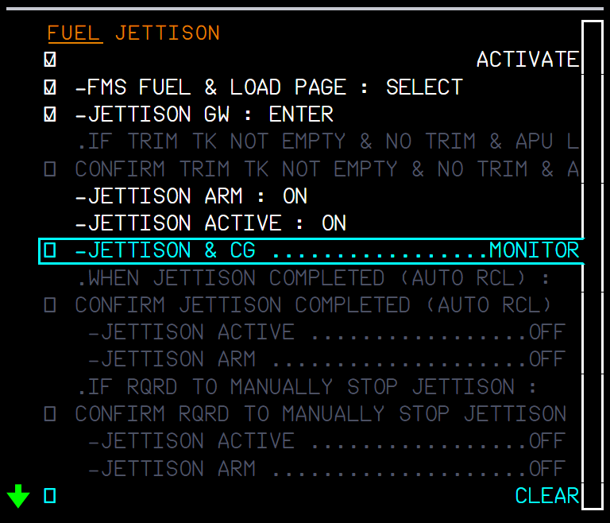
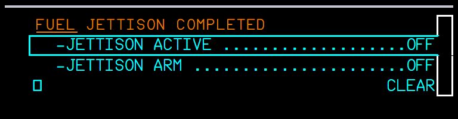

FBW had the overhead JETTISON ARM and ACTIVE pushbuttons, but they did nothing. The fuel management (FQMS) now jettisons the fuel of the transfer tanks down to the gross weight entered on the MFD, and the ECAM shows the memo and the procedures of the FCOM.


The ABN PROC procedure takes the crew through the steps. ECP ABN PROC, then FUEL, then JETTISON:





| Situation | What you should see |
|---|---|
| Gross weight reaches the JTSN GW | The jettison stops, FUEL JETTISON COMPLETED shows, the ACTIVE ON light goes off. |
| All transfer tanks empty (or no JTSN GW entered) | Same: stops and COMPLETED. |
| ACTIVE or ARM set OFF by the crew | Stops at once (manual stop). No COMPLETED alert. |
| Both pushbuttons OFF after COMPLETED | The alert and the COMPLETED state clear; a new jettison can be started. |
| ACTIVE ON without ARM | Nothing: ARM is needed. |
| AC 1 bus not powered | No jettison (FQMS channel unpowered). |
| Limitation | Why | What to do |
|---|---|---|
| JETTISON FAULT, VLV NOT CLOSED and INOP SYS JETTISON come only from the flyPad valve failures. | No other cause of a jettison valve fault is simulated; the four valve failures are described in the next feature. | - |
| The fuel does not really flow out through the outlets. | The MSFS fuel system has no overboard dump: the FQMS sets the tank quantities directly and opens valves 57 / 58 for the SD picture. A fuel mist plume is drawn at the outlets (last feature). | - |
| After an update, the first flight needs a full MSFS restart. | The change touches the behaviour XML of the overhead, which MSFS loads at start. | Restart MSFS once after installing. |
| # | Do this | Expected result |
|---|---|---|
| 1 | A380X with fuel in the transfer tanks (e.g. 150 t block), AC power, active flight plan with its mandatory data. MFD FMS ACTIVE/FUEL&LOAD: type a JTSN GW below ZFW + 5.0 t. | ENTRY OUT OF RANGE with the allowed range in the message area. |
| 2 | Type a JTSN GW about 20 t below the current gross weight. | JTSN GW shows the value. |
| 3 | ECP ABN PROC > FUEL > JETTISON, ACTIVATE. | The ABN PROC FUEL JETTISON procedure; JETTISON ARM and ACTIVE lines not ticked. |
| 4 | Set JETTISON ACTIVE ON without ARM. | Nothing happens (ARM is needed). |
| 5 | Set JETTISON ARM ON (ACTIVE ON). | Memo JETTISON IN PROGRESS (green); the ARM and ACTIVE lines tick; SD FUEL: both jettison valves open, jettison lines and JETTISON legends white (not amber), the outer, mid, inner and trim quantities fall together (about 2.5 t per minute); feed tanks unchanged. |
| 6 | Wait until the gross weight reaches the JTSN GW. | The jettison stops; FUEL JETTISON COMPLETED with ACTIVE OFF / ARM OFF; the ACTIVE ON light goes off. |
| 7 | Set ACTIVE OFF, then ARM OFF. | The lines tick and the COMPLETED alert clears. |
| 8 | Start a new jettison and set ACTIVE OFF halfway. | It stops at once, without COMPLETED. |
The A380 FCOM has two jettison alerts, FUEL JETTISON FAULT and FUEL JETTISON VLV NOT CLOSED (PRO-ABN-ECAM-10-28 P 61-63), and INOP SYS JETTISON on the STATUS page. FBW had no jettison valve failure to trigger them. There are now four failures, one per valve and position. A first version never showed the FAULT caution and the INOP SYS: the FWS read the FQMS flags as numbers (1) and combined them with a function that only counts true; they are now read as real booleans.
| flyPad > Failures > ATA 28 (Fuel) | Effect |
|---|---|
| Jettison valve L stuck closed / Jettison valve R stuck closed | That valve does not open: the fuel goes through the other one at half the rate. The FQMS records the valve fault when the jettison is selected (ARM and ACTIVE ON), until the failure is removed. |
| Both stuck closed | The jettison is not available: no fuel leaves. |
| Jettison valve L stuck open / Jettison valve R stuck open | That valve stays open: the OPEN light of the JETTISON ACTIVE pushbutton stays on and the SD shows the valve open, also with no jettison running. No fuel is lost by it (the jettison itself still needs ARM and ACTIVE). |
| Situation | What you should see |
|---|---|
| One valve stuck closed, jettison selected | Amber caution FUEL JETTISON FAULT; on the ground with the line JETTISON L (R) VLV FAULT. Jettison at half rate. STATUS: INOP SYS JETTISON (the FWS lists it whenever FUEL JETTISON FAULT is active). |
| Both valves stuck closed, jettison selected | FUEL JETTISON FAULT with JETTISON NOT AVAIL, then JETTISON ACTIVE ... OFF and JETTISON ARM ... OFF (they tick as the pushbuttons are set OFF). STATUS: INOP SYS JETTISON. No fuel jettisoned. |
| A valve stuck open, no jettison running | Amber caution FUEL JETTISON VLV NOT CLOSED with JETTISON ACTIVE ... OFF and JETTISON ARM ... OFF; OPEN light on. |
| Takeoff and landing | The alerts are inhibited in the takeoff and landing flight phases (FCOM inhibitions). |
| # | Do this | Expected result |
|---|---|---|
| 1 | A380X on the ground (or in cruise), fuel in the transfer tanks, AC power, JTSN GW entered. flyPad > Failures > ATA 28: activate Jettison valve L stuck closed. Set JETTISON ARM and ACTIVE ON. | Amber FUEL JETTISON FAULT (on the ground with JETTISON L VLV FAULT); SD FUEL: only the right jettison valve open; the transfer tanks empty at half the normal rate (about 1.25 t per minute). STATUS: INOP SYS JETTISON. |
| 2 | Also activate Jettison valve R stuck closed. | FUEL JETTISON FAULT with JETTISON NOT AVAIL, JETTISON ACTIVE OFF, JETTISON ARM OFF; no fuel leaves; STATUS: INOP SYS JETTISON. |
| 3 | Set ACTIVE OFF, then ARM OFF. | The ACTIVE and ARM lines tick. |
| 4 | Deactivate both failures, activate Jettison valve L stuck open (pushbuttons OFF). | Amber FUEL JETTISON VLV NOT CLOSED; OPEN light of JETTISON ACTIVE on; SD FUEL: left jettison valve open; the fuel quantities do not change. |
| 5 | Deactivate the failure. | The valve closes, the OPEN light goes off and the alert clears. |
The jettisoned fuel left no trace outside. A fuel mist plume now trails from each wing's jettison outlet while fuel flows out of that side. The FCOM says there is "one discharge point on the trailing edge of each wing" (DSC-28-40); the outlet is the tube at the aft end of the second-outermost flap track fairing (MFTF 5, forum source), where the companion model adds the effect points.
| Situation | What you should see |
|---|---|
| Jettison in progress, both valves open | A mist plume behind each wing outlet; it gets longer with the true airspeed (its particles stay where they were released). |
| One valve stuck closed | The plume on the other side only. |
| Valve stuck open, no jettison running | No plume (no fuel flows). |
| Below 40 kt true airspeed | The low-speed version of the mist (the stock MSFS water-ballast effect switches at 40 kt). |
| Limitation | Why | What to do |
|---|---|---|
| Needs the aircraft-large-files companion. | The effect hangs on the FX_JETTISON_LH / RH nodes added at the outlets in the A380_WINGS models (fa6c5d1); without them no plume shows. | Install it; a full MSFS restart is needed after the update. |
| The look is the stock water-ballast mist. | Closest stock MSFS effect: design choice. | - |
| No fuel puddle on the ground. | Jettisoned fuel evaporates; nothing is drawn on the ground. | - |
| # | Do this | Expected result |
|---|---|---|
| 1 | A380X in flight (companion models installed, MSFS restarted), JTSN GW entered. Set JETTISON ARM and ACTIVE ON. Outside view of a wing. | A mist plume trails from the trailing edge at the second-outermost flap track fairing, on both wings. |
| 2 | Speed up or slow down. | The plume gets longer at a higher true airspeed. |
| 3 | flyPad > Failures > ATA 28: Jettison valve L stuck closed. | The left plume stops; the right one goes on. |
| 4 | Set ACTIVE OFF. | Both plumes stop. |
| 5 | Remove the failure, activate Jettison valve R stuck open without a jettison. | No plume. |
The FINAL fuel default of the FUEL&LOAD page was a fixed 6.0 t per 30 min (0.2 t per minute, the same flow for the EXTRA time), whatever the weight. The A380 FCOM defines the holding fuel as 30 min at 1 500 ft above the alternate, at holding speed (green dot + 25 kt, CONF CLEAN), ISA, with the landing weight at the alternate (PER-IFT-FPL-MRF HOLDING FUEL). The FINAL fuel now comes from that holding.
core/a380x-mfd-fms.| Situation | What you should see |
|---|---|
| RJTT/RKSI, ALTN RKSS, ZFW 342.6 t, no FINAL entry | FINAL 4.8, time 00:30. |
| ZFW 300.0 t | FINAL 4.2, time 00:30. |
| FINAL fuel 6.0 entered (ZFW 342.6 t) | FINAL time 00:38. |
| FINAL fuel cleared (CLR) | Back to FINAL 4.8, 00:30. |
| 5.0 t of EXTRA fuel at ZFW 342.6 t | EXTRA time about 00:30 or 00:31 (about 6.3 min per tonne; before: 5 min per tonne). |
| Limitation | Why | What to do |
|---|---|---|
| The FINAL time stays 00:30 with a calculated fuel. | Design choice: the time shown is the one the fuel was computed from, not the slightly longer time of the rounded-up fuel. | - |
| The holding altitude and the temperature are not used. | The A380 FCOM has no holding table; the A320neo table varies by less than 5 % from FL15 to FL140, and the FCOM figure is brought back to ISA (design choice). | - |
| The fuel flow is taken proportional to the weight. | Maximum endurance: thrust follows the weight; the A320neo holding table confirms the near linear law (design choice). | - |
| # | Do this | Expected result |
|---|---|---|
| 1 | A380X at the gate, aircraft powered, no flight plan. MFD (FMS) INIT: FROM/TO RJTT/RKSI, ALTN RKSS. FUEL&LOAD: ZFW 342.6, ZFWCG 30.0. | FINAL 4.8, time 00:30 (before: 6.0). |
| 2 | Change the ZFW to 300.0. | FINAL 4.2, time 00:30. Set the ZFW back to 342.6. |
| 3 | Enter 6.0 in the FINAL fuel field. | FINAL time 00:38 (before: 00:30). |
| 4 | CLR the FINAL fuel. | FINAL back to 4.8, time 00:30. |
| 5 | Run FUEL PLANNING, then add 5 t to the BLOCK. | EXTRA time about 00:30 or 00:31 for 5.0 t (before: 00:25). |